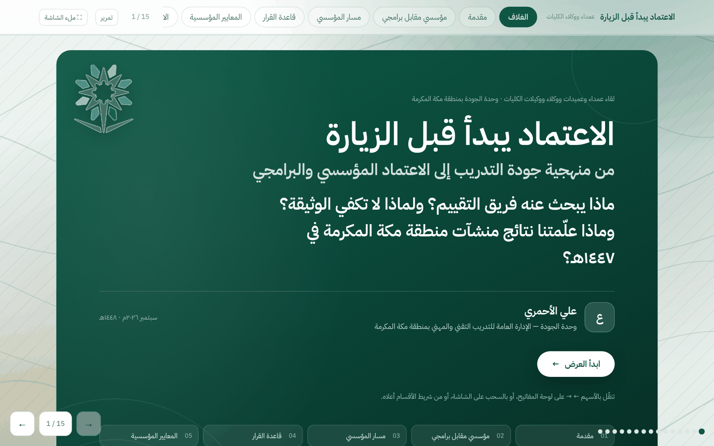
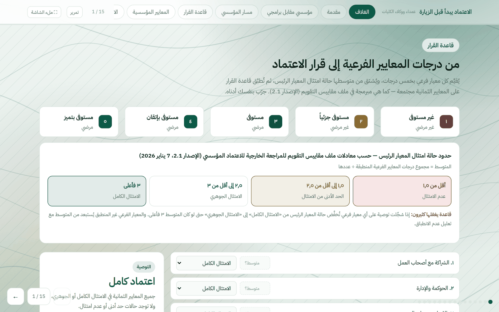
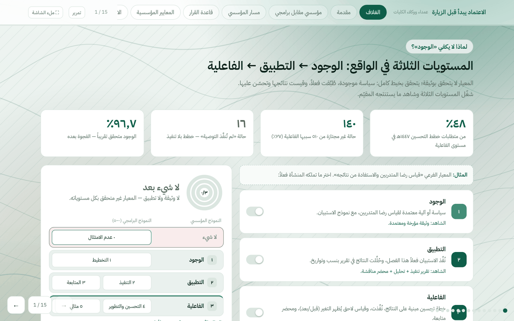
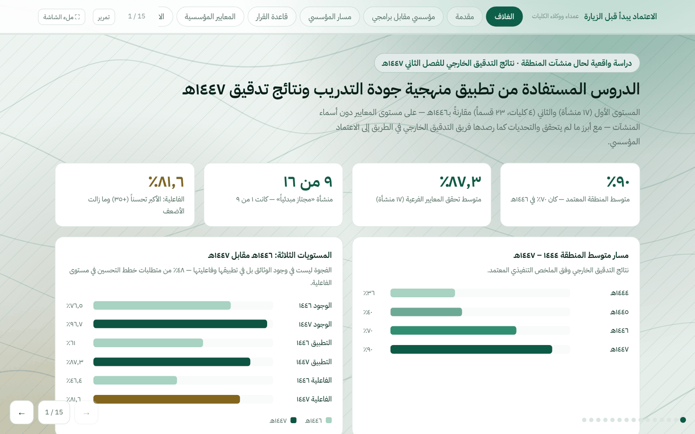
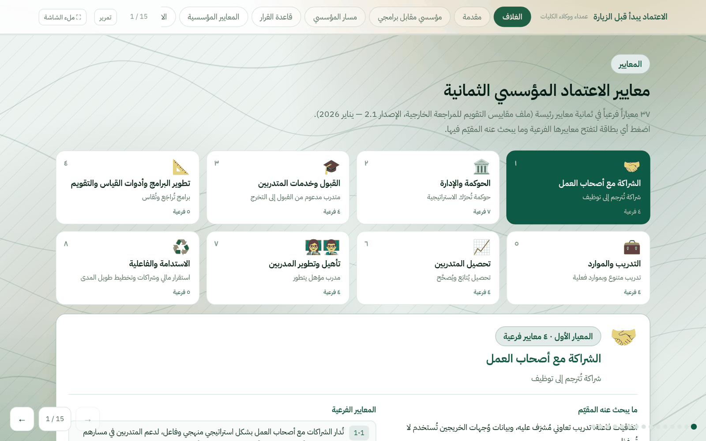

وصف المشروع
متابعة ملف الاعتماد المؤسسي لمنشآت منطقة مكة المكرمة في ثلاثة مسارات متوازية خلال ١٤٤٧هـ: تجديد اعتماد ٧ منشآت (استُكملت دراساتها الذاتية وشواهدها)، واستكمال تقارير الدراسة الذاتية للمرحلتين الرابعة والخامسة لـ٩ منشآت بنسبة ١٠٠٪ مع التحقق من رفع الشواهد لجميع مستويات الجودة، وتقرير استدامة وخطة تحسين للكلية الحاصلة على الاعتماد.
رافق ذلك ورشتا تهيئة مبكرتان قبل انطلاق الفصل التدريبي (أغسطس ٢٠٢٥م)، وملتقى الجودة الافتراضي لوكلاء الجودة، وورشة «الاعتماد يبدأ قبل الزيارة» (سبتمبر ٢٠٢٦م) التي بنيتُها على خبرتي رئيساً لفريق مقيّمين معتمداً لدى الهيئة: ما يفعله فريق المراجعة الخارجية فعلاً أثناء الزيارة، وكيف تُبنى الشواهد قبل الزيارة بسنة لا بأسبوع.
في ١٤٤٨هـ: متابعة ١١ منشأة مستهدفة للاعتماد المؤسسي، و٦٥ ترشيحاً للاعتماد البرامجي في ٢٢ تخصصاً مع تحليل جاهزية القيادة والكادر والتجهيزات لكل ترشيح.
Project description
Institutional and programme accreditation readiness for Makkah-region TVTC institutions (ETEC/MASAR): 7 re-accreditation files, 9 self-study reports completed for accreditation phases 4–5 with evidence verified at every quality level, a sustainability report for the accredited college, two early readiness workshops, a virtual quality forum, and the “Accreditation begins before the visit” workshop — grounded in my work as a certified ETEC Lead Evaluator. Current cycle: 11 target institutions and 65 programme nominations across 22 specialisations.
Workshop clip: “Accreditation begins before the visit” (90 s) ↗

الورش والفعاليات المقدَّمة في مسار الاعتماد
- ورشة عمل «ممارسة منطقة مكة المكرمة للتقييم الخارجي لنظام جودة التدريب»خطوات التقييم الست، محددات الشاهد الستة، مستويات الوجود والتطبيق والفاعلية، والمعايير الأقل تحققاً
- يوم الجودة العالمي — عرضا «الخطوات الرئيسية لعمليات الاعتماد المؤسسي» و«الاعتماد البرامجي»ضمن برنامج نشر ثقافة الجودة والاعتماد المؤسسي بالمنطقة: خمس خطوات، شروط الأهلية، ومعايير المسارين
- ورشتا تهيئة مبكرتان قبل انطلاق الفصل التدريبيتهيئة المنشآت المستهدفة لتحديث الشواهد واستكمال الدراسة الذاتية قبل بدء العام التدريبي
- ملتقى الجودة الافتراضي لتهيئة المنشآت للاعتماد المؤسسي والبرامجي وعرض التجارب المميزةبرعاية مدير عام التدريب بالمنطقة عبر Teams لوكلاء الجودة: ورشة «الاعتماد يبدأ قبل الزيارة» (قدّمتُها) + نقل تجربتين مميزتين من كليتين تقنيتين بجدة
Workshops and events delivered on the accreditation track
- Workshop: Makkah region’s practice of external evaluation of the Training Quality SystemSix evaluation steps, six evidence criteria, the three levels, and the least-achieved standards
- World Quality Day — “Key steps of institutional accreditation” and “Programme accreditation”Regional quality-culture programme: five steps, eligibility conditions and both tracks’ standards
- Two early readiness workshops before the training termPreparing target institutions to refresh evidence and complete self-studies before the year starts
- Virtual Quality Forum: accreditation readiness and distinguished experiencesUnder the patronage of the regional Director General, on Teams for quality deputies: my workshop “Accreditation begins before the visit” plus two experience-sharing sessions from Jeddah technical colleges
ما تقدّمه الوحدة للمنشآت المستهدفة
What the unit provides to target institutions
لقطات حقيقية من المرجع التفاعلي «الاعتماد يبدأ قبل الزيارة»



